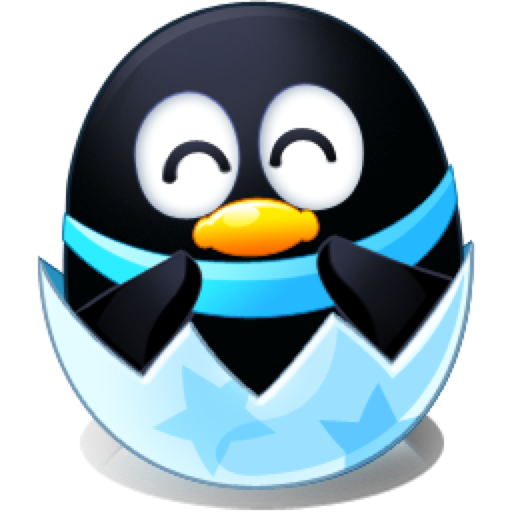

桌面挂机养成
喂食、洗澡、抚摸、打工，饥饿值和心情会随真实时间变化，关掉程序也在悄悄长大。

QQPet Remake
那只企鹅回来了。桌面挂机养成、语音聊天、农牧场种菜养鸡、旅行相册，
装好就住在你的屏幕角落，安静地等你回来。
v 1.0.162026-11-0195.1 MBWindows 10 / 11 (x64)
不是一张图片，是会饿、会闹、会出远门的活物
喂食、洗澡、抚摸、打工，饥饿值和心情会随真实时间变化，关掉程序也在悄悄长大。
按住说话就能和企鹅对话，识别结果直接进输入框，不用再打一行字。
种菜、养鸡、收蛋、扩建栏位。动物按真实时间生产，回来就有一窝蛋在等你。
让企鹅自己出门旅行，回来带照片和特产，攒满一本属于它的相册。
食物、玩具、装扮都能用元宝买到，买完立刻进背包，不用等下次刷新。
高分辨率精灵图、成长动画、语音包按需下载，装好即可离线运行，不额外占用。
无需配置，装完双击就住进来
点上面的「Windows 版下载」拿到 QQPet Setup 1.0.16.exe。已经装过旧版的话，下 5.2 MB 的增量包更快。
默认装到当前用户目录，不需要管理员权限。若杀毒软件误报，加入信任即可。
语言包、高清素材、农牧场等模块会按需下载，在「设置 → 更新」里可以看到进度，也可以随时卸载。
完整记录见 Gitee Releases